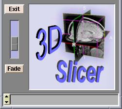

The vertical slider in the lower left of the Menu Window, just under the Exit button, is used to fade from the images displayed in the background (Bg) layer to the images displayed in the foreground (Fg) layer. In the example below, the images in the background are grayscale images and the images in the foreground are labelmap or segmented images.
|  |
|
|